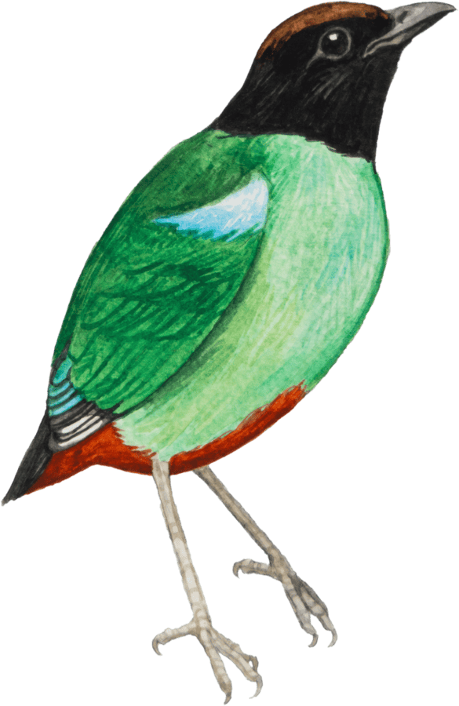
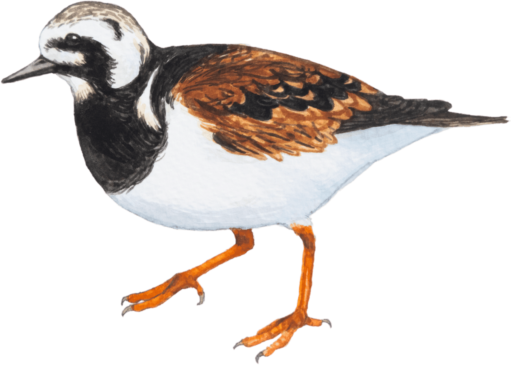
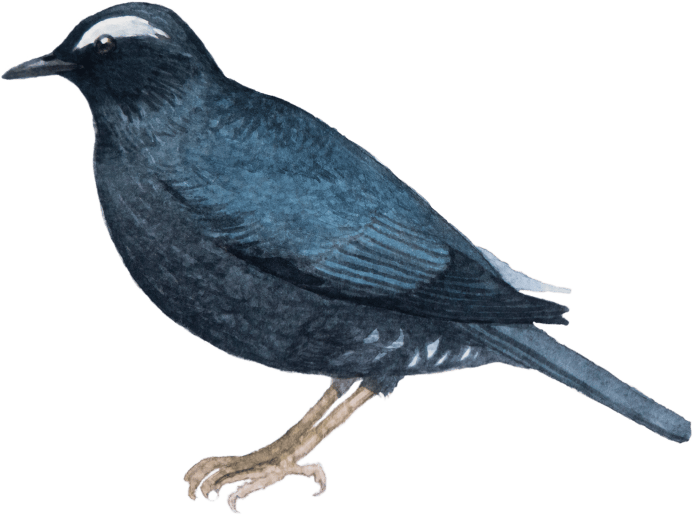
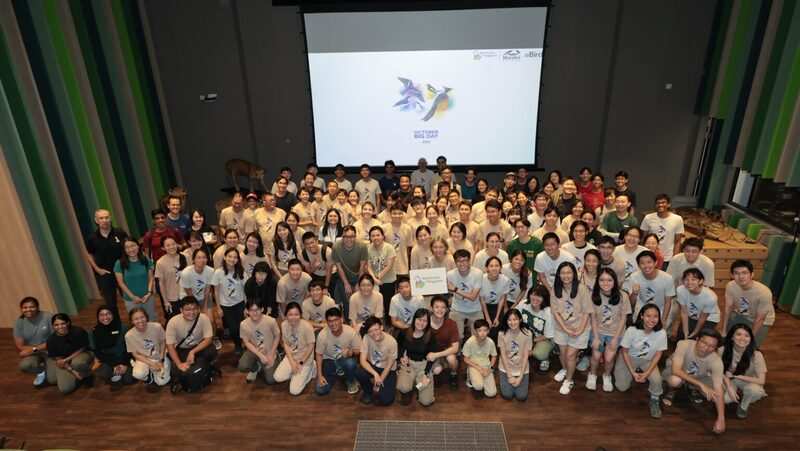

1
Singapore's best-known migrant trap. In October the young woodland and open lawns pull in flycatchers, cuckoos and thrushes on passage.
StartBidadari Park Carpark
EndLake View Deck · Alkaff Lake



After a first October Big Day in 2025, this year moves to the afternoon. We start with lunch and bird-themed activities at Fort Canning Centre, then hear from experienced birders and scientists on avian research, conservation and citizen science through eBird.
From 4 pm, everyone heads out to one of six sites across the island. Each group is led by ornithologists, experienced birders and youth volunteers, with at least one BirdSoc SG site leader present. Transportation from Fort Canning Centre to the sites is provided.
Not registering? You can still take part in eBird's October Big Day. Anyone in Singapore can submit a checklist on 10 October, wherever you are — let's make it the day with the most eBird checklists ever submitted in Singapore!
Covers lunch, the talks, a shuttle to your birding site and an event shirt. BirdSoc SG is a volunteer-run and volunteer-led organisation; all registration fees are donated back to the Society.

158 species and 179 checklists across the island on 11 October 2025, with birders at five sites and talks at Mandai afterwards.
Read the recap →Timings are tentative and may shift slightly closer to the date.
Pick one when you register. Birding runs from 4 to 6 pm, after the talks at Fort Canning Centre.
Singapore's best-known migrant trap. In October the young woodland and open lawns pull in flycatchers, cuckoos and thrushes on passage.
A naturalised stretch of the Kallang River through open parkland — kingfishers, herons, and raptors moving over at dusk.
Secondary forest on the site of a former Hainan village, buffering the Central Catchment. Forest birds, and a chance of the Raffles' Banded Langur.
The historic hill above the venue itself. Mature trees and spice gardens hold pittas and flycatchers in season — walk straight out from the talks.
Grassland, freshwater wetland and lakeside parkland in one loop — waterbirds and munias to migrant warblers in the reeds.
Eco-Lake, a rainforest fragment and curated gardens at a UNESCO World Heritage Site. Easy birding with a wide range of garden and water birds.
Every sighting goes into eBird, where it informs studies and conservation policy here and abroad.
Six sites in one afternoon show how much birdlife our parks and nature spaces hold — we're likely to record both migratory and resident species.
Experienced birders, scientists, and newer birders can all learn from one another, and grow the pool of people contributing to science here.
Slots are limited! The event starts at 1pm at Fort Canning Park and ends at your selected birding site at 6pm.
Write to the organising team and we'll get back to you as soon as we can. BirdSoc SG is a volunteer-run organization, so we appreciate your patience.